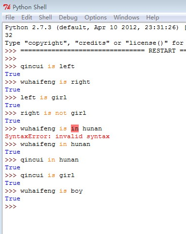
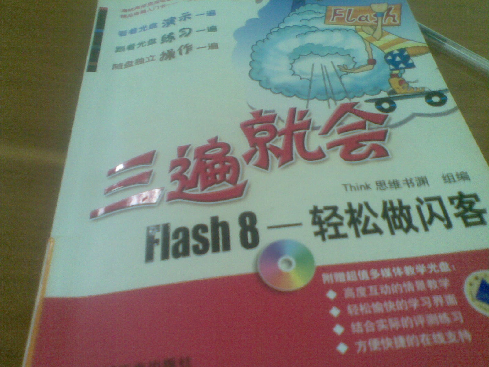
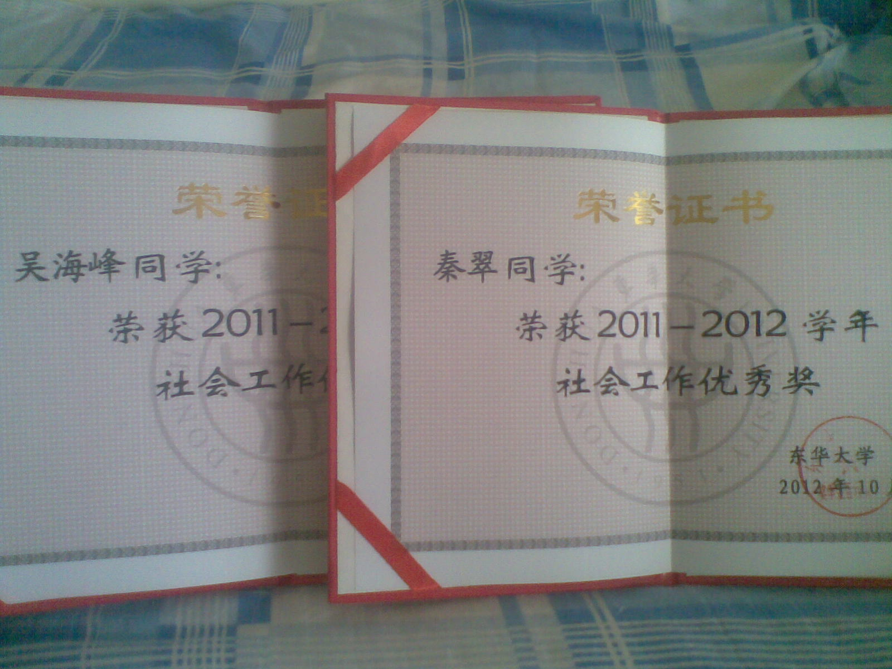

始末
还记得这家伙吗？这家伙叫python，偶尔看见一本书《head first for python》里面讲了用 python做网站应用，我当时灵机一动，就有了这么个想法。它开发出来的应用是通过google 的app engine 发布的，于是接触到很多google的东西，很喜欢google的产品。可惜当我准备动手时， 才发现google app engine好像国内不能用，我又灵机一动，改投到flash门下，借了这本书

看了flash的书，发现flash里面也很博大精深，它能做很多东西，能做图像处理，能做小应用， 如模拟电子琴，可以做小网站，小动画等等，学着很有意思。
再后来发现了本git的书，里面讲github很好，然后就看着去做，这是一个程序员互相协作的平台， 可以上传和跟随别人的程序。就借了本html的书看着，写着，发现做网站也很有意思，而且修改了下 代码，马上有看的见的成果。
当然，我还都不会，要做的更好点，还要学css，php框架之类的。等明年再做一个。
致谢
通过做这些东西真学会了不少东西。，而且都是在非常高的兴趣下完成了，有时候有了个想法， 就去想怎么做，翻翻书，搜搜，然后解决了。有兴趣真的是一件很幸福的事，畅快而乐此不疲。 做flash的时候，完全是根据自己想的，画个纸飞机，飞呀，然后 还真实现了。缺点就是太丑了点，技术不熟，还有很多技巧不会。做网站的时候，也用到了flash，就是 把音频嵌进去。其实，写网页遇到了很大的困难。写生日主题，绞尽脑汁扩展页面内容不知道写什么。要么就 写到其他地方去了。做视频是最好玩的，自编自导自演，还自己后期处理。毛笔字还要练练。 在此过程中，也改变了我对flash和做网站的看法（大学时有一天我看了专科生 的课表，发现他们一上来就做网页，于是潜意识里就不想学这些），发现他们还是很实用，很好玩的， 这样的东西也就不应该只是专科生的专利了。以后还当继续学习。

嘿嘿，证书发了，忘了跟你说了！